密码学简介
1. 密码学(cryptography)能够做什么？
密码学的常规应用包括密钥协商，加密传输，数字签名，匿名通信等，除此之外还包括安全多方计算，私有外包计算，零知识证明等；
安全多方计算：
安全多方计算（Secure Muti-party Computation，简称MPC，亦可简称SMC或SMPC）问题首先由华裔计算机科学家、图领奖获得者姚期智教授于1982年提出，也就是为人熟知的百万富翁问题：两个争强好胜的富翁Alice和Bob在街头相遇，如何在不暴露各自财富的前提下比较出谁更富有？
以选举为例：A,B两个候选者，每个人都可以投票给一个候选者，且只能投票一次，最终获得票数最多的当选；但是再次过程中每个人并不暴露自己的投票情况，也不暴露最终每个候选者的得票情况；
形式化成数学表达为：F(x1, x2, …, xn)，即计算多方输入的输出，但并不暴露每个输入；
最简单，愚蠢的做法是利用一个可信的中间机构，每一方都把自己的输入传给中间机构，由中间机构来进行计算；
密码学有一个非常核心的定理：即所有能够使用可信权威机构来实现的功能，都能够不使用可信权威机构来实现；
私有外包计算：
人们每天都会大量使用搜索引擎来进行查询搜索，但是并不希望暴露自己的搜索内容；用户可以将加密的搜索内容加密之后发给Google，Google直接在密文上进行运算，返回运算结果，用户解密之后可得搜索结果；
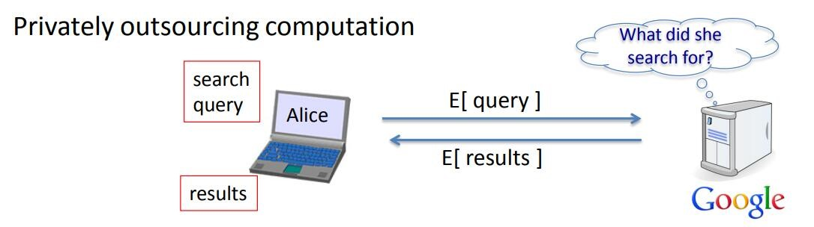
零知识证明：
证明者在不暴露任何信息的情况下，向验证者证明某种声明；以数独为例，A有某个数独问题的答案，需要向B证明自己知道该问题的答案，但并不希望暴露答案具体是什么？在该情景下的解决方案是，B指定某一行某一列或者某一个块，A将B指定数独位置的结果收集混合起来，展示给B看，如果是1~9则满足要求，否则不满足要求；B可以多次要求A进行展示，从而证明A确实知道数独的答案；
2. 密码学历史：
密码学可以分成对称加密，非对称加密，后量子密码三个时期；1976年Whitfield Diffie 和 Martin Hellman 发表的论文New Directions in Cryptography之前全都是对称加密，即加密和解密都使用同一个密钥；1976年的论文里没有给出具体的算法，在1977年迅速提出了第一个非对称加密算法RSA，后续又提出了其他的非对称加密算法，所基于的主要数学难题为大数的质因子分解，离散对数的计算，椭圆曲线上离散对数的计算，如DH、ECDH、RSA、ECDSA。1997年 Peter W. Shor提出了一种量子计算机上的多项式时间复杂度的算法来计算这些数学难题，2006年召开了第一届后量子密码学大会（PQCrypto），量子安全的加密算法包括格密码学，编码密码学，多变量密码学，超奇异椭圆曲线同源密码学等。
替换加密：包括凯撒加密（罗马时期），用新的字母替换原有字母，密钥空间为26！（2^88）；破解方案：唯密文攻击即可，由于英文中字母出现的频率是不一样的，因此可以统计单字母（unigram），双字母（bigram）的出现频率，从而将密文字母和明文字母配对即可；
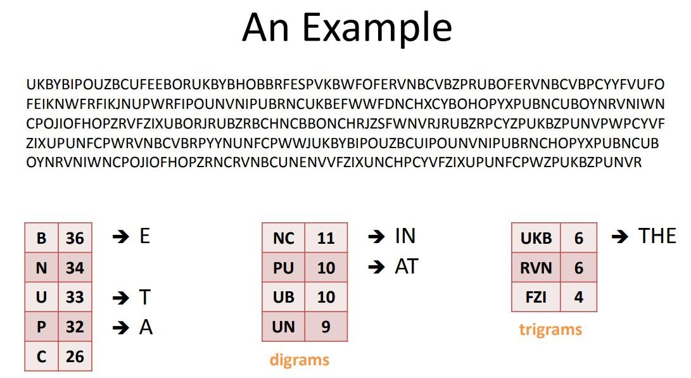
由于凯撒密码及其容易破解，在16世纪的文艺复兴时期，vigener提出了新的加密方法，通过将消息m和密钥k相加后模26，就得到了密文c，解密就是用密文c和密钥k相减后模26即可。
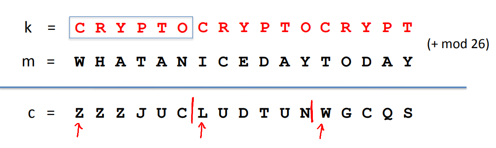
vigener密码也是很容易被字符频率统计攻破，攻击者只需要猜测密钥的长度l，然后收集每隔l的字符统计其频率即可得到对应位置的密钥字符；
在19实际的电气化时代，设计了电驱动的密码机，称为Rotor Machine（轴轮机），本质还是替换密码，不同的是密钥由Rotor机的磁片代替，然后每输入一个字符，磁片旋转一次。单磁片的Rotor机依然非常容易被字符频率统计破坏。二战时期有个非常有名的Rotor机称为Enigma，其有好几个磁片，分别以不同的频率旋转，磁片的初始设置即为密钥；
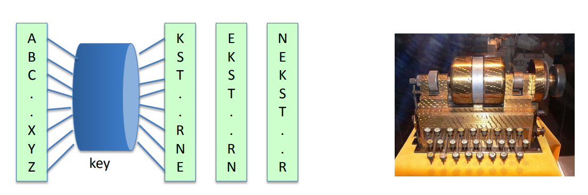
以上是古典密码学的内容，而现代密码学是一门非常严谨的学科，每种加密协议都有着严格的证明，为了保密的安全，各国都制定了各自的加密标准。
3. 离散概率简介
现代的密码学机制都有相应的证明过程，而这些证明过程都是建立在离散概率上的，因此这里简单介绍一下离散概率的相关知识。
1）离散概率定义
有限集合U，例如：U={0, 1}^n
定义在U上的概率分布P是一个函数P:U = [0, 1]，P需要满足对于所有属于U的X，P(X)的和为1，即∑X∈U（P(X)）= 1；
常见的概率分布有：
均匀分布：所有属于U的X的概率都是一样的，P(X) = 1/|U|;
点分布：除指定的X0之外其他所有属于U的X的概率都是零，而X0的分布P(X0)=1；
2）事件
对于U的任意子集A，Pr[A] = ∑X∈A（P(X)）∈ [0,1]；集合A便被称之为事件；
3）两个事件的并的概率的上界
U的任意两个子集事件A1,A2并的概率一定小于等于A1的概率加上A2的概率。等号发生在两个事件的交集为0的情况下；
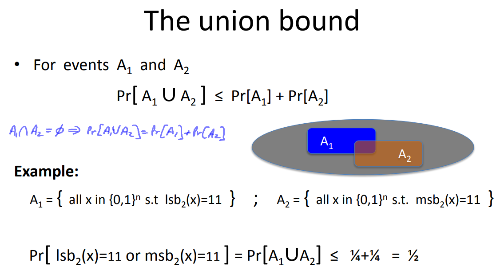
4）随机变量
随机变量X是一个函数：X:U -> V，即随机变量X在U上可以诱导出V，其中V是随机变量X取值的地方，
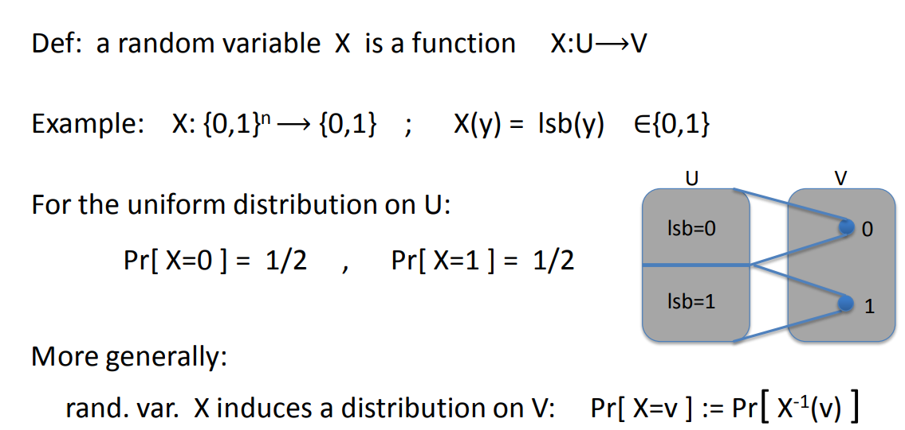
5）均匀随机变量
简单的说均匀随机变量R就是一个恒等函数，对所有属于U的X，都有R(X) = X；
假设我们定义一个有限集合U（U = {0, 1}^2），定义U的均匀随机变量r，再定义一个随机变量X = r1+r2，意思是X等于均匀随机变量的第一位和第二位的和，那么Pr[X = 2] = Pr[r = 11] = 1/4；
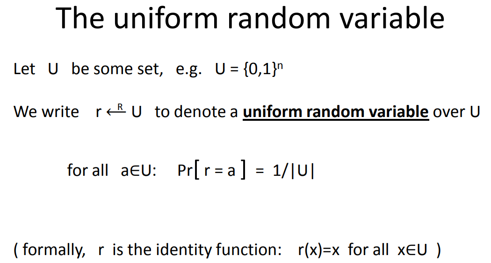
6）随机算法
确定性算法：对于同样的输入m，不论运行多少次都得到相同的输出y；y <- A(m)；
随机算法：和确定性算法不同，随机算法除了输入m之外还有一个均匀随机变量r，算法每次运行的时候，r都重新进行取样；所以算法每次运行得到的输出都是不同的；
y <- A(m, r) 其中r <-R- {0, 1}^n；也可以表示成y <-R- A(m)；
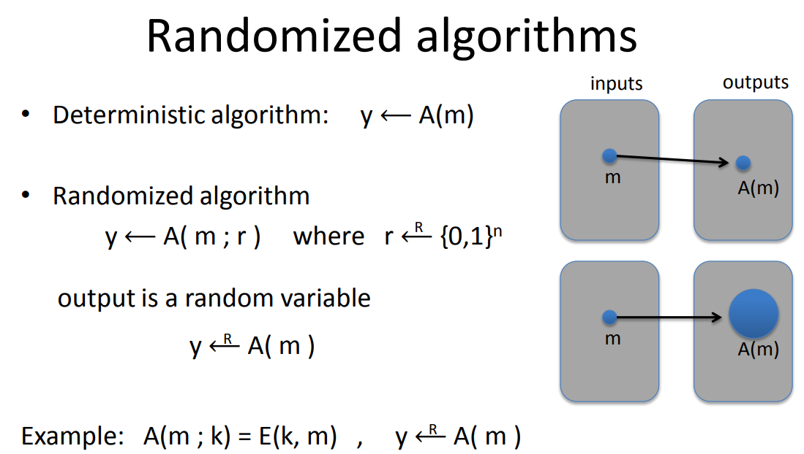
7）独立性
事件A,B是独立的，代表Pr[A and B] = Pr[A]*Pr[B]；
都在V上取值的随机变量X,Y是独立的，代表Pr[X = a and Y= b] = Pr[X = a]*Pr[Y = b]
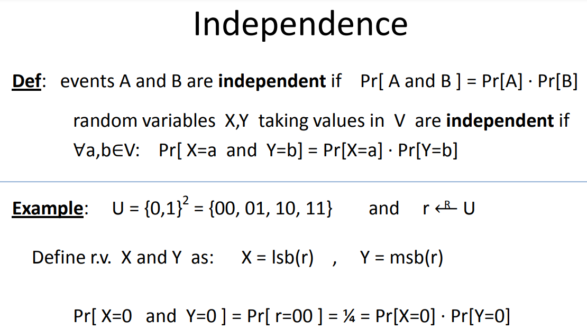
8）异或XOR
相同的位为0，不同的位为1；
异或一个非常重要的性质，证明见下图：
对任意的一个定义在{0,1}^n上的随机变量Y，假设X是一个独立的均匀分布的随机变量X（不是均匀随机变量），那么对于Z := X xor Y，Z 一定也是一个均匀随机变量；
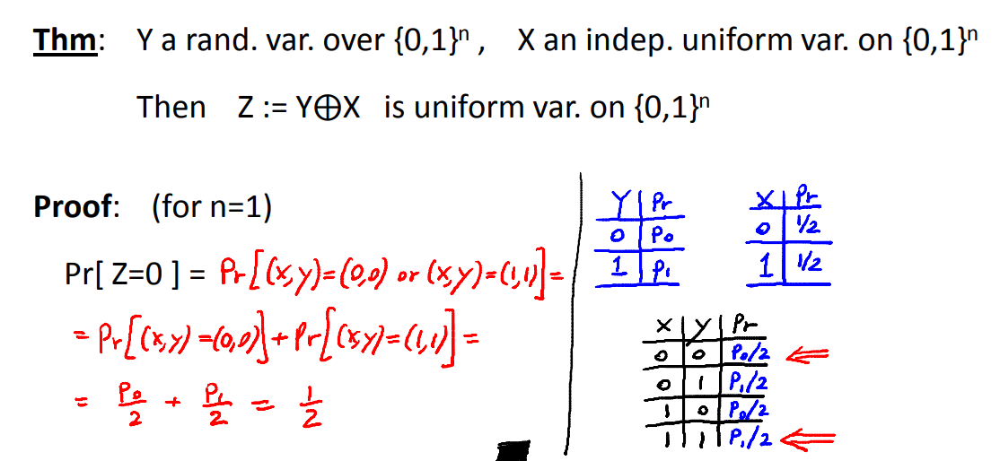
9）生日悖论
对于n个均匀随便变量，当n等于有限集合U的数量的1/2次方乘以1.2时，这n个均匀随机变量重复的概率超过了1/2；
一年365天，有23个人，（23 约等于 1.2*365^0.5），那么这23个人生日重复的概率超过1/2，当有60个人时，生日重复的概率超过90%；
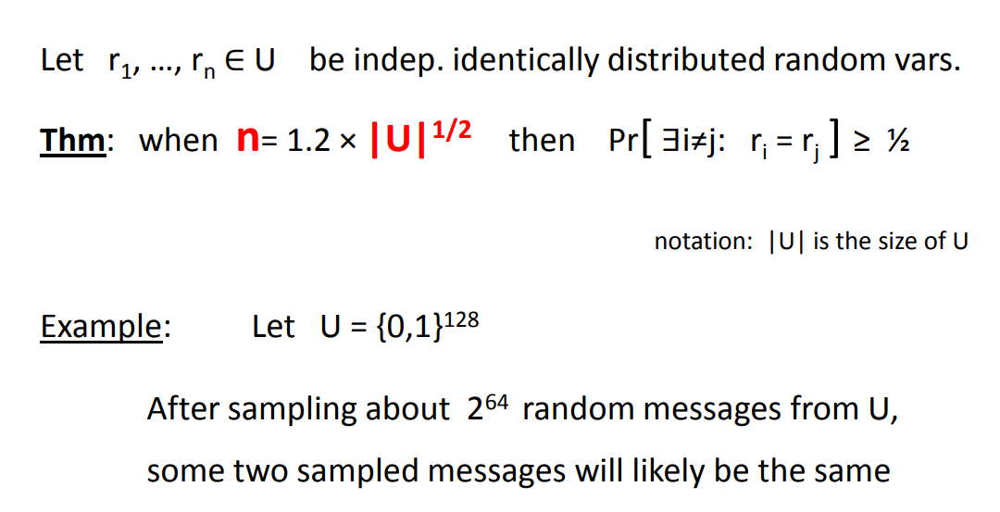
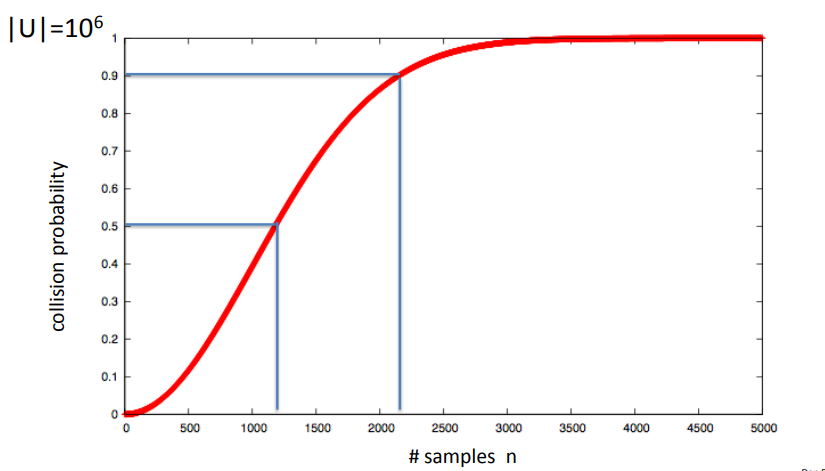
4. 参考
[1] http://redisbook.com/
[2] https://pdai.tech/md/db/nosql-redis/
[3] https://segmentfault.com/a/1190000040102333
[4] https://limuzhi.com/2017/11/18/cardinality-counting/